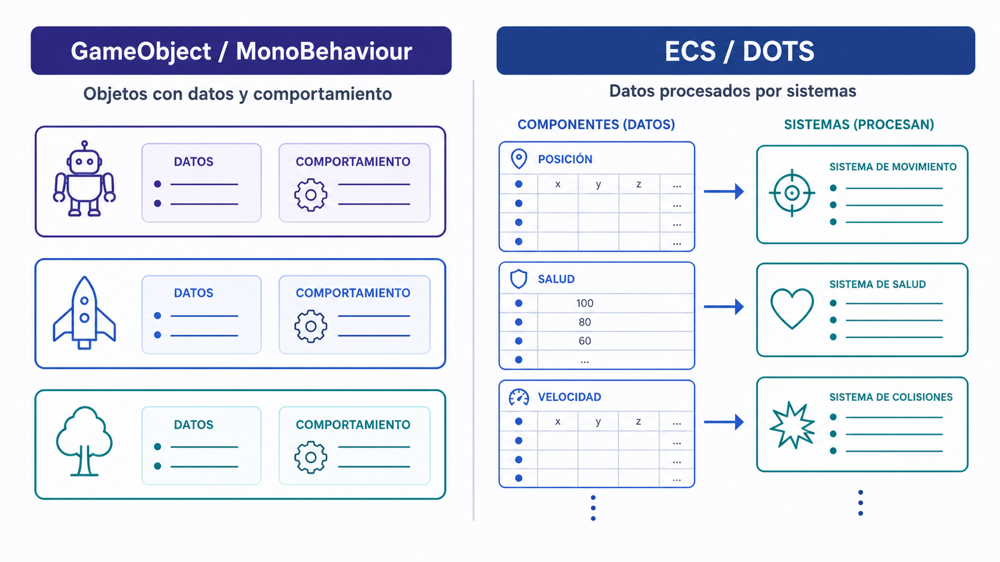
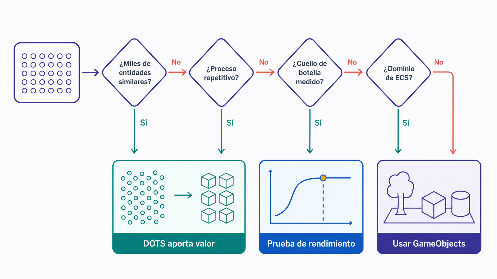
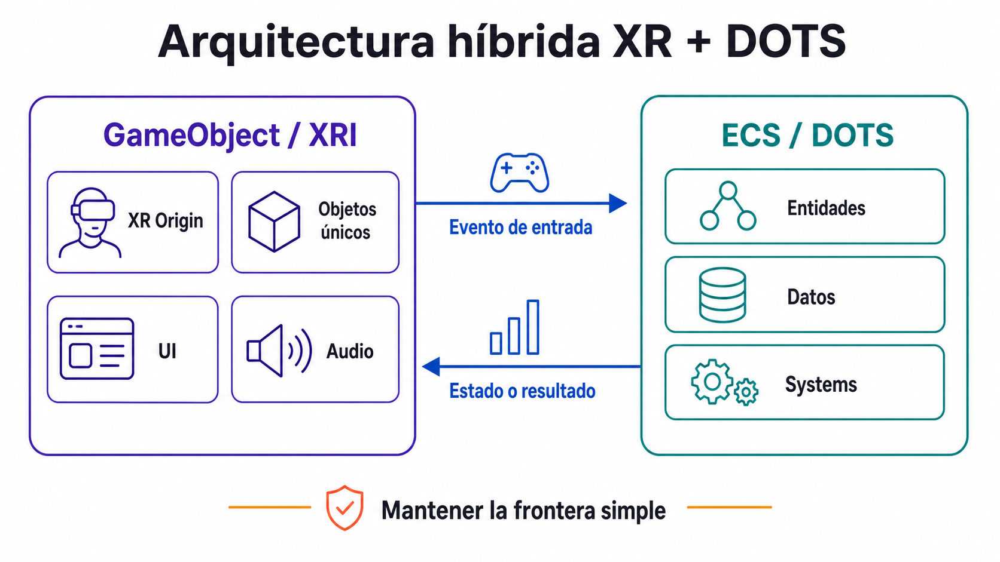

Data-oriented design en Unity: cuándo DOTS ayuda, cuándo estorba, y qué casos XR se benefician de un enfoque ECS + Jobs + Burst.
Objetivos de aprendizaje
Comprender qué es DOTS y qué problema resuelve.
Distinguir el paradigma GameObject/MonoBehaviour del paradigma ECS.
Identificar casos XR donde DOTS aporta valor real.
Conceptos clave
DOTSData-Oriented DesignECSEntities vs GameObjectsComponents como datosSystems como comportamientoC# JobsBurst
Introducción
Esta octava clase introduce Unity DOTS desde una perspectiva conceptual y de diseño. DOTS (Data-Oriented Technology Stack) agrupa tecnologías orientadas a procesar grandes cantidades de datos de forma eficiente. No se plantea como solución mágica ni obligación técnica: el objetivo es comprender cuándo DOTS ayuda, cuándo estorba y qué partes de una experiencia XR podrían beneficiarse de un enfoque ECS + Jobs + Burst. En Unity tradicional se trabaja con GameObjects, Components y MonoBehaviours; en DOTS los datos se separan del comportamiento, las entidades se procesan por sistemas y el código puede beneficiarse de mejor organización de memoria, paralelización y compilación optimizada. La pregunta central es: ¿mi proyecto necesita realmente DOTS o sería más claro, rápido y seguro resolverlo con GameObjects y MonoBehaviour?
Conceptos en detalle
DOTS
Data-Oriented Technology Stack. Conjunto de tecnologías de Unity orientadas a trabajar con datos de forma eficiente. Sus tres pilares son ECS / Entities, C# Job System y Burst Compiler.
Procesamiento masivo de partículas.
Simulación de multitudes.
Sistemas con miles de agentes similares.
Data-Oriented Design
Enfoque de programación centrado en cómo se organizan, acceden y procesan los datos. En lugar de preguntar qué objetos tengo, pregunta qué datos necesito procesar, con qué frecuencia, en qué orden y cuántos elementos hay.
Organizar miles de elementos en arrays contiguos en memoria.
Pensar primero en el flujo de datos y después en la lógica.
ECS
Entity Component System. Patrón arquitectónico basado en entidades, componentes de datos y sistemas de comportamiento. Separa datos y lógica: la entidad identifica algo, el componente contiene datos y el sistema procesa entidades que comparten determinados componentes.
Una entidad con Position + Velocity es procesada por un MoveSystem.
Miles de entidades comparten el mismo sistema en lugar de tener un script Update individual.
Entity
Unidad mínima de identificación en ECS. Por sí sola no tiene forma visual, lógica ni comportamiento; se define por los componentes que posee.
Una partícula.
Un agente.
Un proyectil.
Una unidad de multitud.
Una pieza de entorno procedural.
Components como datos
En ECS los componentes son datos puros, normalmente structs que implementan IComponentData. No describen comportamiento; solo almacenan información que un sistema usará después.
struct Velocity : IComponentData { public float3 Value; }
struct Lifetime : IComponentData { public float Seconds; }
Systems como comportamiento
Los Systems contienen la lógica. Procesan en lote todas las entidades que poseen ciertos componentes, lo que permite tratar miles de elementos con un único bloque de código.
Un MoveSystem actualiza posición de todas las entidades con Position + Velocity.
Un LifetimeSystem destruye entidades cuyo Lifetime llega a cero.
GameObject
Unidad básica tradicional de Unity. Objeto de escena que contiene componentes como Transform, MeshRenderer, Collider, Rigidbody, AudioSource o scripts MonoBehaviour. Ideal para prototipado rápido, interacción XR, objetos únicos, UI, audio y cámaras.
Un XR Origin con sus controladores.
Un objeto interactivo único en la escena.
Un panel de UI espacial.
MonoBehaviour
Clase base habitual para scripts de Unity tradicional. Permite usar métodos como Start, Update, OnTriggerEnter o OnCollisionEnter. Muy productivo en proyectos pequeños o medianos, pero puede volverse costoso con miles de objetos con lógica individual en Update.
Un script Mover con Update que avanza un objeto.
Un script Interactable que reacciona a un trigger.
C# Job System
Sistema de Unity que permite ejecutar código en paralelo aprovechando múltiples núcleos de CPU. Útil para procesar muchos datos, calcular posiciones, actualizar simulaciones y evitar bloquear el hilo principal.
Actualizar la posición de 50.000 partículas en paralelo.
Calcular movimiento de 10.000 agentes.
Distribuir trabajo pesado fuera del hilo principal.
Burst
Compilador de Unity que traduce código compatible (IL/.NET) a código nativo optimizado usando LLVM. Se usa normalmente con Jobs, sistemas ECS y código matemático intensivo.
Acelerar un Job que procesa miles de vectores.
Optimizar un sistema ECS con muchos cálculos por frame.
NativeArray
Estructura de datos usada frecuentemente con Jobs. Almacena datos en memoria nativa para procesarlos de forma eficiente y segura en trabajos paralelos.
NativeArray<float3> con posiciones de partículas.
NativeArray<float> con estados de simulación.
El problema que DOTS intenta resolver
Unity tradicional funciona muy bien con GameObject + Component + MonoBehaviour: es intuitivo, visual y rápido para prototipar. Pero cuando una escena contiene miles o decenas de miles de elementos que deben actualizarse cada frame aparecen problemas: muchos Update, muchos Transforms, búsquedas frecuentes de objetos, datos dispersos en memoria, dificultad para paralelizar y uso intensivo del hilo principal. DOTS intenta resolver este tipo de problemas organizando los datos de forma más eficiente y separando claramente datos y comportamiento.
GameObject / MonoBehaviour: claridad y productividad
El paradigma tradicional se basa en objetos. Un cubo puede tener Transform, MeshRenderer, Collider, Rigidbody, scripts de movimiento e interacción y un AudioSource. Es muy visual en el editor, fácil de entender, rápido de prototipar, compatible con XR Interaction Toolkit e ideal para objetos únicos. Sus límites: puede escalar peor con miles de objetos, muchos Update pueden ser costosos, datos y lógica se mezclan y paralelizar no es directo.
ECS: datos separados del comportamiento
En ECS una entidad no contiene un script con Update. Tiene componentes de datos y un sistema externo procesa todas las entidades que comparten esos componentes. En lugar de pensar 'cada objeto sabe cómo moverse', pensamos 'hay un sistema que mueve todos los objetos con datos de movimiento'. Esto cambia la forma de organizar y razonar sobre el código.

Figura 3.9 — Contraste entre organización orientada a objetos y ECS.
Components como datos puros
En MonoBehaviour, un script puede mezclar datos (speed) y lógica (mover en Update). En ECS los datos van separados en structs IComponentData (Velocity { float3 Value; }) y la lógica se coloca en un sistema. Esta separación permite procesar grandes grupos de entidades con la misma lógica de forma uniforme.
Systems como comportamiento compartido
Un sistema ECS puede actualizar muchas entidades a la vez. Conceptualmente, un MoveSystem busca todas las entidades con Velocity y LocalTransform y actualiza sus posiciones. Ventajas: menos lógica duplicada, procesamiento más organizado, mejor potencial de rendimiento y más fácil pensar en simulaciones masivas. Límite: requiere aprender una forma de programar menos visual e inmediata que MonoBehaviour.
Jobs y Burst: paralelización y compilación optimizada
Los Jobs permiten repartir trabajo entre varios núcleos de CPU, útil cuando muchas operaciones son similares e independientes: actualizar 50.000 partículas, calcular movimiento de 10.000 agentes, simular viento, procesar una nube de puntos. Burst compila código compatible a código nativo optimizado y puede mejorar notablemente cálculos matemáticos repetitivos. Importante: Burst no convierte automáticamente todo el proyecto en rápido; solo optimiza código compatible y bien estructurado.
DOTS no siempre es la mejor opción
DOTS puede no compensar cuando la escena tiene pocos objetos, el proyecto depende mucho de XR Interaction Toolkit, la lógica es muy específica por objeto, el plazo es corto, el equipo no conoce ECS, el cuello de botella está en GPU o el prototipo necesita iterar rápido. DOTS puede ser útil con miles de entidades similares, simulaciones masivas, multitudes, partículas dinámicas personalizadas, agentes autónomos, entornos procedurales o cálculos repetitivos con necesidad real de rendimiento CPU. En un proyecto académico de un semestre, DOTS debe usarse solo si responde a una necesidad clara.

Figura 3.10 — Árbol de decisión para valorar el uso de DOTS.
Tipologías
GameObject / MonoBehaviour
Paradigma tradicional de Unity. Unidad básica GameObject; datos en campos de componentes y scripts; comportamiento en MonoBehaviour, Update y eventos. Editor muy visual, curva baja, prototipado rápido, ideal para pocos o medianos objetos.
XR Origin
Objetos interactivos únicos
UI espacial
Triggers narrativos
Preguntas de análisis
¿La cantidad de objetos justifica un cambio de paradigma?
¿Necesito XR Interaction Toolkit en esta parte?
¿Puedo iterar rápido manteniendo MonoBehaviour?
ECS / DOTS
Unidad básica Entity; datos en IComponentData; comportamiento en Systems. Editor menos inmediato y curva alta, pero mejor escalabilidad para miles de elementos similares. Complemento avanzado dentro del curso.
Multitudes
Partículas masivas
Agentes autónomos
Simulaciones repetitivas
Preguntas de análisis
¿Tengo miles de elementos similares?
¿El comportamiento se repite con poca variación?
¿El rendimiento es realmente un problema?
Arquitectura híbrida — parte GameObject
Capa de la experiencia que se mantiene en GameObject + MonoBehaviour. Incluye lo que requiere interacción XR directa, integración con XR Interaction Toolkit, UI, audio y gestión de escena.
XR Origin, cámara y controladores.
Objetos interactivos principales.
UI espacial y AudioSources.
Triggers narrativos y gestión de escena.
Preguntas de análisis
¿Esto necesita interactuar con XRI?
¿Es un elemento único o limitado?
¿Se beneficia de la inspección visual del editor?
Arquitectura híbrida — parte DOTS
Capa de la experiencia destinada a sistemas masivos o simulaciones. Aislada del resto, recibe señales del lado GameObject y devuelve estados o resultados.
Multitudes y agentes secundarios.
Partículas y simulaciones.
Sistemas procedurales.
Movimiento de miles de entidades.
Preguntas de análisis
¿Puede aislarse en un módulo o escena propia?
¿Qué entrada recibe del lado GameObject?
¿Qué resultado entrega de vuelta?
Caso XR — Multitud en VR
Experiencia donde el usuario observa o atraviesa una multitud de agentes. DOTS ayuda con movimiento de muchos agentes, estados simples, comportamientos repetitivos y actualización eficiente.
Calle llena de personas en movimiento.
Multitud reaccionando al usuario.
Preguntas de análisis
¿Qué se calcula para cada agente?
¿Todos necesitan la misma calidad de comportamiento?
¿Qué parte puede simplificarse?
Caso XR — Partículas masivas
Instalación inmersiva donde miles de puntos reaccionan al usuario. DOTS ayuda con movimiento de partículas, simulación de campo, reacción a posición del usuario y cálculos matemáticos por entidad.
Nube reactiva en una sala.
Campo de puntos que sigue al cuerpo del visitante.
Preguntas de análisis
¿Cuántas partículas necesito en pantalla?
¿La reacción al usuario es local o global?
¿La densidad es parte del significado de la obra?
Caso XR — Visualización de datos espaciales
Experiencia XR que muestra miles de datos como puntos, líneas o agentes. DOTS ayuda a organizar grandes cantidades de datos, actualizar posiciones, filtrar elementos y animar transiciones.
Nube de puntos navegable.
Red de relaciones entre miles de nodos.
Preguntas de análisis
¿Los datos cambian en tiempo real?
¿Qué filtros aplicará el usuario?
¿Necesito animación entre estados?
Caso XR — Ecosistema procedural
Entorno con muchos organismos, luces, partículas o elementos que evolucionan. DOTS ayuda con reglas simples repetidas, simulación distribuida, movimiento autónomo y estados de entidades.
Bosque con miles de pequeños organismos.
Ciudad nocturna con luces y elementos vivos.
Preguntas de análisis
¿Las reglas son lo bastante simples para repetirse a escala?
¿Qué estados necesita cada entidad?
¿Cómo se observa el sistema desde la primera persona?

Figura 3.21 — Frontera de comunicación en una arquitectura híbrida XR y DOTS.
Referentes
Unity Megacity / Megacity Metro
Proyectos de Unity que muestran ciudades pobladas, streaming de assets y miles de elementos activos simultáneamente, usados para comunicar las capacidades de DOTS.
¿Todos los agentes necesitan la misma calidad de comportamiento?
¿Qué parte puede simplificarse?
¿Qué se podría procesar con Jobs?
¿Qué se mantendría con GameObjects?
Actividades
Ejercicio 1 — ¿DOTS o MonoBehaviour?
Actividad central · 23 min · Ejercicio
Esbozar, sin abrir Unity, qué parte de un posible proyecto podría beneficiarse de DOTS y qué parte conviene dejar en MonoBehaviour. Completar una tabla por sistema.
Listar los sistemas principales del proyecto (interacción XR, UI espacial, objetos manipulables, partículas/agentes, audio, triggers narrativos, simulación masiva).
Para cada sistema, decidir MonoBehaviour o DOTS.
Justificar la decisión brevemente.
Anotar el riesgo asociado.
¿Qué parte necesita interacción directa con XR Interaction Toolkit?
¿Qué parte contiene muchos elementos similares?
¿Qué parte debe iterarse rápidamente?
¿Qué parte puede procesarse como datos?
¿Qué parte sería demasiado compleja si se hiciera con DOTS?
Ejercicio 2 — Transformar un sistema de objetos en sistema de datos
Actividad central · 23 min · Ejercicio
Elegir un sistema tradicional basado en GameObjects y reinterpretarlo como datos ECS (por ejemplo: 100 luciérnagas, 1.000 partículas de polvo, 500 visitantes virtuales, 2.000 hojas con viento, 10.000 puntos de datos).
Describir el enfoque GameObject: qué tendría cada GameObject.
Listar los datos necesarios (Position, Velocity, Color, State, Lifetime, Target).
Definir qué sistema procesaría esos datos.
Indicar si necesita interacción directa.
Decidir si DOTS tendría sentido (Sí / No / Parcialmente) y justificar.
¿Qué datos cambian cada frame?
¿Qué datos son estáticos?
¿Qué lógica es común a todos los elementos?
Actividades de ampliación opcional · fuera de la sesión
Ejercicio 3 — Coste de adopción de DOTS
Ampliación opcional · 20 min · Ejercicio
Crear una lista priorizada de costes y beneficios de usar DOTS en un proyecto académico y tomar una decisión final.
Listar beneficios posibles (rendimiento masivo, organización de datos, Jobs y Burst, escalabilidad).
Listar costes o riesgos (curva de aprendizaje, menos rapidez para prototipar, menor compatibilidad con XRI, dificultad para depurar).
Marcar el beneficio realmente útil para el propio proyecto.
Marcar el coste que puede poner en riesgo la entrega.
Tomar una decisión final argumentada.
¿Qué parte podría probar en una escena separada?
¿Qué parte nunca debería depender de DOTS?
¿Cuál sería mi decisión final?
Ejercicio 4 — Diseño de arquitectura híbrida XR + DOTS
Ampliación opcional · 20 min · Ejercicio
Diseñar una arquitectura híbrida para una experiencia XR, repartiendo responsabilidades entre GameObject/MonoBehaviour, XR Interaction Toolkit y DOTS.
Indicar nombre del proyecto.
Listar tres elementos en la parte GameObject / MonoBehaviour.
Listar tres elementos en la parte XR Interaction Toolkit.
Listar tres elementos en la parte DOTS.
Describir la comunicación entre sistemas (qué evento GameObject activa DOTS, qué dato DOTS afecta a la escena principal).
Anotar el riesgo técnico principal y un plan de simplificación.
¿Qué señal cruza la frontera entre GameObject y DOTS?
¿Qué pasa si la parte DOTS no llega a tiempo?
¿La separación de responsabilidades es clara?
Investigación aplicada
Ampliación opcional · fuera de la sesión
Localizar un videojuego, simulación, obra, instalación o demo técnica donde se gestionen eficientemente muchos objetos, agentes o partículas (videojuego con multitudes, simulación urbana, instalación de partículas, obra generativa, visualización de datos, demo técnica de Unity, experiencia VR con muchos agentes). Trabajo autónomo útil para el Laboratorio 5 y el proyecto final.
¿El proyecto necesita procesar muchos elementos cada frame?
¿Los elementos tienen comportamientos similares?
¿La escala es parte del significado de la obra?
¿Qué pasaría si se redujera el número de elementos?
¿El cuello de botella sería CPU, GPU, memoria o renderizado?
¿DOTS resolvería el problema o solo una parte?
Conexión con Unity
Ejercicio puente con el Laboratorio 5: antes de crear la escena DOTS_demo, definir qué se quiere comparar entre GameObjects y Entities, qué comportamiento se repetirá, qué datos necesita y qué se medirá en el Profiler. El objetivo es usar DOTS para responder una pregunta técnica concreta, no por defecto.